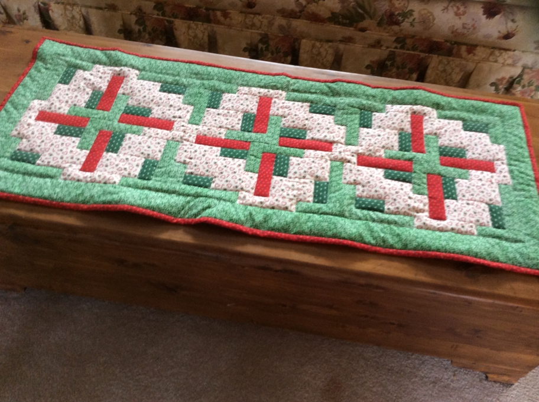

Having made several table runners to give away I decided it was time to make one for myself. This pattern is called Minnesota Hot Dish and I saw it many years ago at a quilt show in Minneapolis. I also made a full sized bed quilt from this pattern and realized again the importance of color placement. The quilt was done as an “easy” project while recovering from surgery. Since I was physically unable to shop I used what I had. That project served a need but is only “ok” as a finished project. The color placement in the runner is much better.